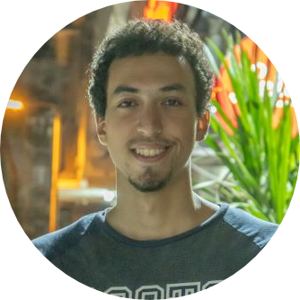

Objective:
Computer Science student seeking a challenging role to apply acquired
knowledge and practical experience in Software Engineering.
Highly-motivated and results-driven, able to work and learn as part of a
dedicated team.
Education
-
2020-2024 Cairo University, Bachelor of Science in Computer Science
- Scholarship for undergraduate studies.
- Current GPA: 3.0
-
2018-2019 Nobel Language School, General Certificate of Secondary
Education
Skills and Languages
- Programming Languages: C++, Java, Python, JavaScript, SQL.
- Markup Languages: HTML, CSS.
- Microsoft Office: Excel, Word, PowerPoint.
-
Spoken Languages: Arabic (Native Language), English (Fluent),
French (Fair).
Extracurricular Activities
- 2020 ECPC Qualification contest
-
2020 Minders student activity
-
2018 Resala Charity Association
- Helped in bagging and delivering food to people.
Other
My Hobbies
Contact Me